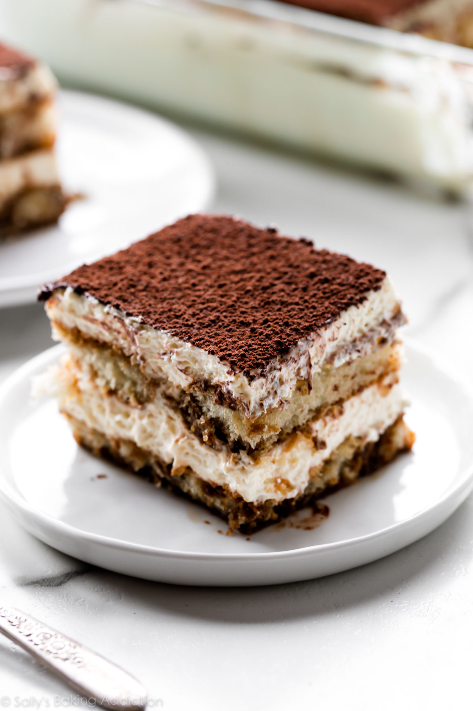

Description
AClassic tiramisu, with its irresistible coffee flavor and lightly sweetened mascarpone, will never go out of style. This tiramisu recipe is a no-bake dessert that's sure to impress even the pickiest of eaters.
Ingredient
- Egg Yolks
- Sugar
- Cream
- Vanilla
- Mascarpone
- Coffee
- Rum
- Ladyfingers
- Cocoa Powder
Steps
- Cook the egg yolks, sugar, and milk until slightly thickened. Let cool slightly, then chill in the fridge for about an hour. When the filling has fully chilled, mix in mascarpone cheese.
- Beat heavy cream with vanilla extract until stiff peaks form.
- Combine coffee and rum in a small bowl. Pour mixture over ladyfingers that have been split in half lengthwise.
- Line the bottom of a baking dish with soaked ladyfingers. Spread half of the mascarpone mixture over the ladyfingers, then half of the whipped cream over that. Repeat in the same order. Dust with cocoa powder. /li>
Return to top
Return to main page